10 documented architecture patterns for deploying AI on Azure. Each includes a service list, cost estimate, composite SLA calculation, Bicep IaC, and a deploy spec generator. Covers hub-spoke, serverless, private AI, lakehouse, migration, and greenfield scenarios.
Click any card for details. Use the search box to filter.
Cloud-native AI workloads on Azure
Centralized AI hub via Azure AI Foundry, APIM GenAI gateway with semantic caching, and Azure OpenAI with gpt-4o/gpt-4o-mini.
Each BU owns AI resources in a spoke VNet with Azure Virtual Network Manager and per-spoke AI Foundry workspaces.
APIM GenAI gateway with load balancing + AI Foundry hub/spoke projects + Prompt flow orchestration.
Azure AI Foundry with Prompt flow, AI Evaluation, AI Agent Service, NC A100 v4 GPU, and AI Model Catalog.
Functions Flex Consumption + Container Apps + Durable Functions with gpt-4o-mini for cost-optimized AI.
Zero-trust with DCesv5 confidential VMs, Entra Workload ID, Confidential Ledger, AI Foundry managed VNet.
OneLake + Real-Time Intelligence + Direct Lake mode, Databricks Unity Catalog + Mosaic AI, Fabric AI Skills.
Migrate existing workloads to Azure
Azure Migrate + Site Recovery with D4s_v6 Cobalt 100 VMs, Azure Arc, Update Manager, and AMA agent.
SQL MI Link for near-zero downtime, Next-gen GP tier, ledger tables, and Microsoft Purview governance.
Build a new Azure environment from scratch
Landing Zone Accelerator + Azure Verified Modules (AVM), Entra ID Governance, managed Grafana, Copilot for Azure.
| Pattern | Governance | Team Autonomy | Cost | Complexity | Best For |
|---|---|---|---|---|---|
| Centralized Hub | High | Low | $$ | Medium | Shared AI services org-wide |
| Decentralized Spoke | Medium | High | $$$ | High | Autonomous team ownership |
| Hybrid Central-Spoke | High | Medium | $$$ | High | Enterprise multi-BU balance |
| AI Factory / MLOps | High | Medium | $$$ | Very High | Full ML lifecycle management |
| Serverless AI | Medium | High | $ | Low | Event-driven & bursty workloads |
| Secure Private AI | High | Low | $$$$ | Very High | Regulated / zero-trust environments |
| Data-Centric Lakehouse | High | Medium | $$$ | High | Analytics-heavy AI workloads |
| Lift & Shift Migration | Medium | Low | $$ | Medium | Legacy VM rehosting to Azure |
| SQL to Azure SQL | High | Low | $$ | Medium | Database modernization & migration |
| Greenfield Azure | High | Medium | $$$ | High | New cloud environment (Zero to Hero) |
Prices sourced from Azure Pricing Pages (March 2026). Estimates assume moderate production workloads (~500M tokens/mo).
| Service | SKU / Tier | Unit Price | Pricing Page |
|---|---|---|---|
| Azure OpenAI | GPT-4o Global Standard | Input $2.50 / Output $10 per 1M tokens | View |
| GPT-4o-mini Global Standard | Input $0.15 / Output $0.60 per 1M tokens | ||
| o1-mini (reasoning) | Input $1.10 / Output $4.40 per 1M tokens | ||
| text-embedding-3-large | $0.143 per 1M tokens | ||
| text-embedding-3-small | $0.022 per 1M tokens | ||
| Azure AI Foundry | Hub workspace (free tier) | No platform charge — pay for compute only | View |
| NC A100 v4 (1× A100 GPU) | ~$1,802/mo ($2.47/hr) | ||
| API Management v2 | Basic / Standard v2 / Premium | $150 / $700 / $2,801 per month | View |
| GenAI gateway policies | Included — token rate-limit, semantic cache, circuit-breaker | ||
| AI Search | Basic / S1 / S2 (vector + semantic) | $73.73 / $245.28 / $981.12 per month | View |
| Key Vault | Standard | $0.03 per 10K transactions | View |
| Azure Monitor | Analytics Logs / Basic | $2.30 / $0.50 per GB ingested | View |
| Functions | Flex Consumption (GA) | $0.20 per 1M exec + $0.000016/GB-s + VNet support | View |
| Container Apps | Consumption | vCPU $0.000024/s + memory $0.000003/GiB-s | View |
| Azure Firewall | Standard / Premium | $912 / $1,278 per month + data | View |
| Cosmos DB | Serverless / Autoscale (1K RU/s) | $0.25/1M RU / ~$58.40/mo + $0.25/GB | View |
| Microsoft Fabric | F64 (OneLake + Real-Time Intelligence) | ~$5,000/mo | View |
| Azure Databricks | Premium (Unity Catalog + Mosaic AI) | $0.40–$0.65 per DBU-hr | View |
All prices in USD. Actual costs depend on usage, region, and reservations. See Azure Pricing Calculator for precise estimates.
| Pattern | SLA |
|---|---|
| Serverless AI | 99.73% |
| Centralized Hub | 99.72% |
| AI Factory / MLOps | 99.72% |
| Secure Private AI | 99.68% |
| Decentralized Spoke | 99.67% |
| Data-Centric Lakehouse | 99.67% |
| Hybrid Central-Spoke | 99.54% |
| SQL to Azure SQL | 99.97% |
| Lift & Shift Migration | 99.95% |
| Greenfield Azure | 99.95% |
| Pattern | Reliability | Security | Cost Opt. | Ops. Ex. | Perf. |
|---|---|---|---|---|---|
| Centralized Hub | ★★★ | ★★★★ | ★★★★ | ★★★ | ★★★ |
| Decentralized Spoke | ★★★★ | ★★★ | ★★ | ★★ | ★★★★ |
| Hybrid | ★★★★ | ★★★★ | ★★★ | ★★★ | ★★★★ |
| AI Factory | ★★★ | ★★★ | ★★★ | ★★★★★ | ★★★ |
| Serverless | ★★★ | ★★★ | ★★★★★ | ★★★★ | ★★★ |
| Secure Private | ★★★★★ | ★★★★★ | ★★ | ★★★ | ★★★ |
| Data-Centric | ★★★★ | ★★★ | ★★★ | ★★★★ | ★★★★★ |
| Lift & Shift | ★★★★ | ★★★ | ★★★★ | ★★★ | ★★★ |
| SQL Migration | ★★★★★ | ★★★★ | ★★★★ | ★★★ | ★★★ |
| Greenfield | ★★★★ | ★★★★ | ★★★ | ★★★★ | ★★★★ |
Click any module to view its Azure documentation
A prescriptive guide to designing Azure Landing Zones that host AI services securely, at scale, and aligned with the Cloud Adoption Framework. Covers management groups, subscriptions, networking, identity, governance, and platform services.
| Pattern | LZ Type | VNet Model |
|---|---|---|
| Centralized Hub | Platform LZ | Hub + Peering |
| Decentralized Spoke | App LZ (×N) | Isolated VNets |
| Hybrid Central-Spoke | Platform + App | Hub-Spoke |
| AI Factory / MLOps | Dedicated AI LZ | 5+ Subnets |
| Serverless AI | Online / Sandbox | No VNet |
| Secure Private AI | Corp LZ | Fully Private |
| Data-Centric Lakehouse | Dedicated AI LZ | 6+ Subnets |
| Lift & Shift Migration | Corp LZ | Hub-Spoke |
| SQL Migration | Data LZ | PE + DNS Zones |
| Greenfield Azure | Platform LZ | Hub-Spoke + VPN |
Intelligent student & institution insights powered by three AI crawler engines. Built on the same Azure AI patterns, tailored for higher education — from LMS activity analysis to predictive dropout prevention.
Explore Education PlatformStudent interactions, LMS activity, engagement signals
Curriculum, policies, research, accreditation
Performance analytics, outcomes, retention metrics
Conversational course guidance, policy Q&A, career mapping
ML-based early warning with 4-tier risk scoring
Personalized semester-by-semester adaptive plans